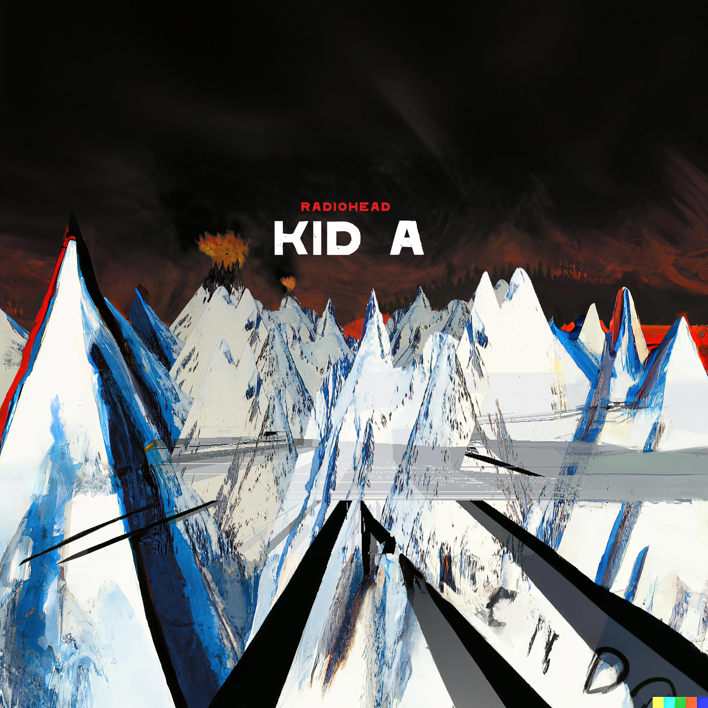

dirtyMan
Kid A
Kid A is the fourth studio album by the English rock band Radiohead, released on 2 October 2000 by Parlophone. It was recorded with their producer, Nigel Godrich, in Paris, Copenhagen, Gloucestershire and Oxfordshire.
10 Likes
dirtyMan
Kid A is the fourth studio album by the English rock band Radiohead, released on 2 October 2000 by Parlophone. It was recorded with their producer, Nigel Godrich, in Paris, Copenhagen, Gloucestershire and Oxfordshire.
10 Likes
30STM’s first three albums— which I all love to pieces and are some of my favorite albums ever— are primarily progressive rock, but A Beautiful Lie has a LOT of post-hardcore influence and some of the songs on it are totally post-hardcore, like “The Kill”. They were a prog band but loved to experiment by mixing in other rock genres. I’ve always thought the self titled album was progressive metal, A Beautiful Lie was prog-pxh and This Is War is just prog. Love Lust Faith + Dreams is electronic rock and still listenable while a huge step down from the first three and America is hot garbage and the musical equivalent of getting a dead rat or used condom in the mail.
I like it, too. I once read that the album is dedicated to his mother who was batting and eventually recovering from colon cancer. With that in mind I can take some more meaning from the music and song titles. In particular, in Ghost, in one section, I hear something to the effect of: “It’s perfect... I love you... but think about how bad it coulda been... Then it repeats “Think about how bad it coulda been...” one last time. But that’s just what I hear. This section ENDS at 3:30. I’ve tried showing it to people (Buckethead fans, even) and most of them just looked at me like I was crazy. I like a lot of the songs on the album quite a bit but I’d say Machete is my favorite if I was gonna choose just one. I have my own inner thoughts on Watching the Boats With My Dad as well but they’re more difficult to put into words.
The Smile have finally released their sophomore album Wall of Eyes on physical formats and streaming platforms, and it is out NOW! This is a hub for all discussion related to the release, singles, music videos, and more. Post reviews, ramblings, thoughts! You are free to post elsewhere if you wish, but a centralized post like this usually helps keep discussion focused. : The music video premiere for "Friend of a Friend" directed by Paul Thomas Anderson also happened yesterday, so check that out below! Additionally, a European tour begins this month in just a couple months! Comments asking for PM's of leaks will be removed.
30STM’s first three albums— which I all love to pieces and are some of my favorite albums ever— are primarily progressive rock, but A Beautiful Lie has a LOT of post-hardcore influence and some of the songs on it are totally post-hardcore, like “The Kill”. They were a prog band but loved to experiment by mixing in other rock genres. I’ve always thought the self titled album was progressive metal, A Beautiful Lie was prog-pxh and This Is War is just prog. Love Lust Faith + Dreams is electronic rock and still listenable while a huge step down from the first three and America is hot garbage and the musical equivalent of getting a dead rat or used condom in the mail.